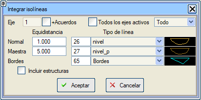
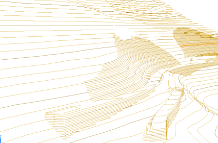

| |
|
MÜNHANİLERİ ENTEGRE ET
|
Bu araç, viyadükler ve tüneller hariç olmak üzere, güzergahın kamulaştırma alanları içindeki haritayı boşaltır ve dökülme konilerini dahil eder. Ardından bu alanlar içinde, güzergah ve dökülme konileri tarafından oluşturulan yeni yüzeyden türetilen tesviye eğrilerini (münhanileri) oluşturur. 
Mevcut güzergah için veya tüm güzergahlar için oluşturulabilir. Mevcut güzergah seçilirse, aynı güzergaha, kesişimlerdeki veya dönel kavşaklardaki birleşim yerlerinin kapladığı alanı diğer güzergahlara karşı şu seçenekle ekleyebilirsiniz:  + Kavşak Kolları + Kavşak KollarıMünhaniler için yüzey, güzergahlarımıza eklenmiş olası bordürleri de içerir. Eğer [ ] Üstyapısız seçeneğini seçersek, tesviye eğrilerini oluşturur ancak taşıt yolu yüzeyini (yüzey 67) veya bordürleri kullanmaz. Yani, tesviye eğrilerini subrasanteden (yüzey 68) geçirerek oluşturur. Eğer [ ] Sadece Üstyapı seçeneğini seçersek, münhaniler sadece 67 yüzeyi ve bordürlerinden oluşturulur. [ ] Sanat Yapıları seçeneği, sanat yapısı bölgelerinde de münhanileri çizer. Münhaniler, diyalog kutusundan oluşturulduğunda yeni bir kaynakta [Münhanileri Entegre Et] oluşturulur. (ediar.lil'den veya bir .lil dosyasından oluşturulursa kaynakları [ISPOL.lil]'dir). 
|